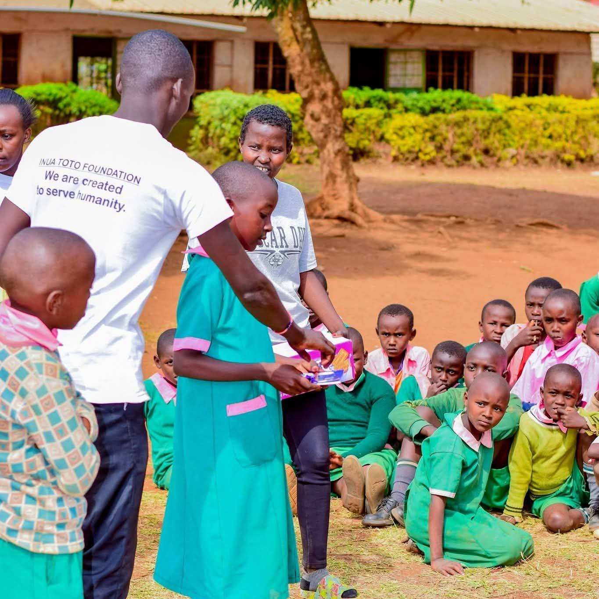
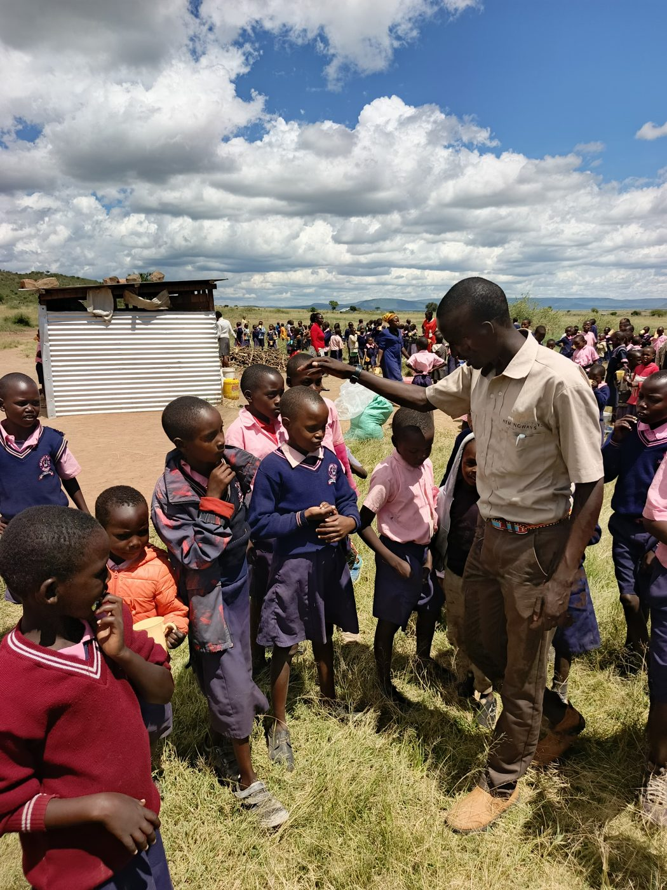
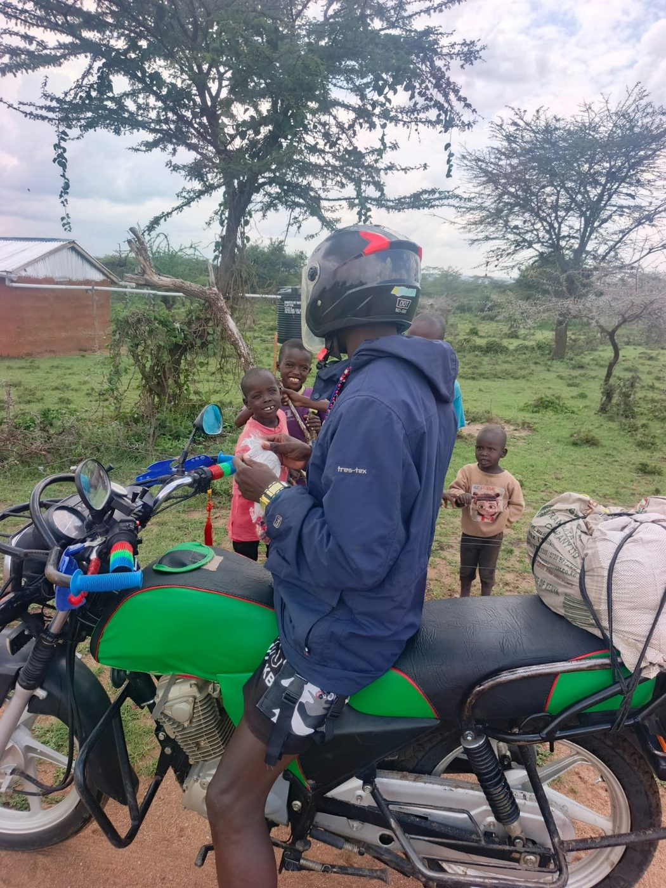
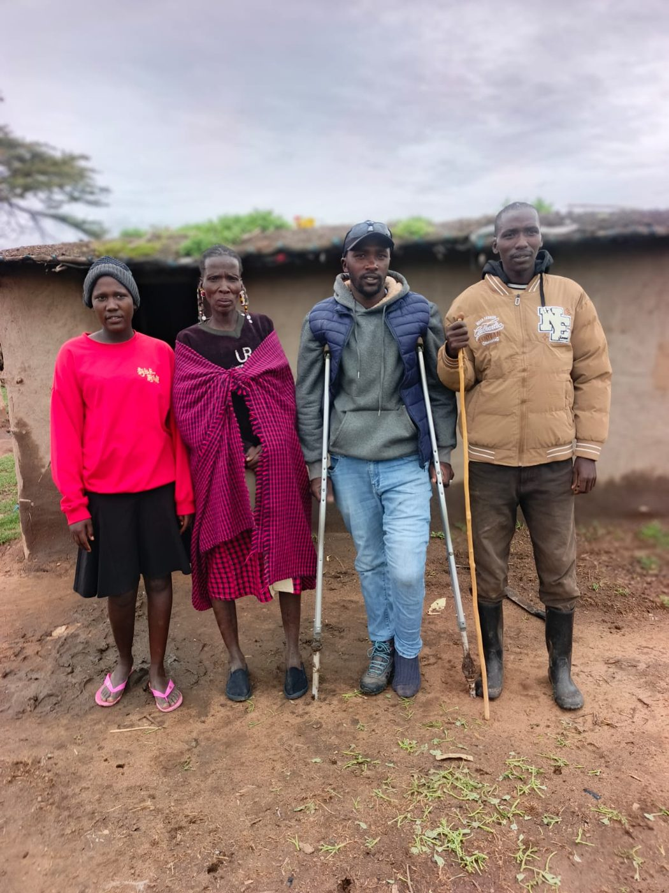
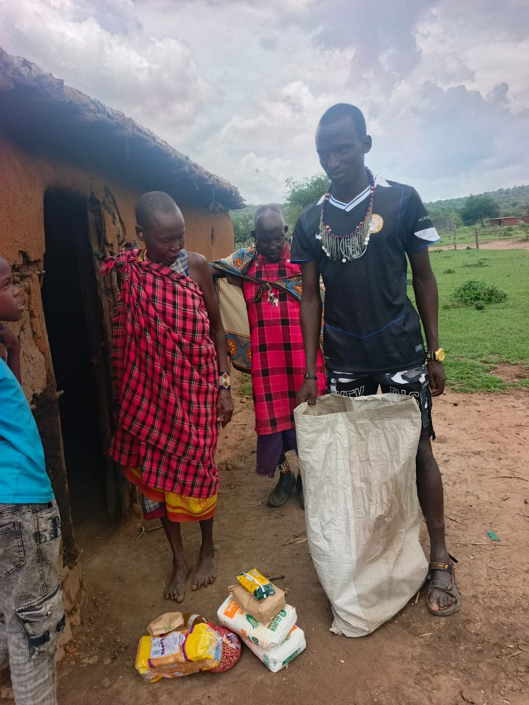
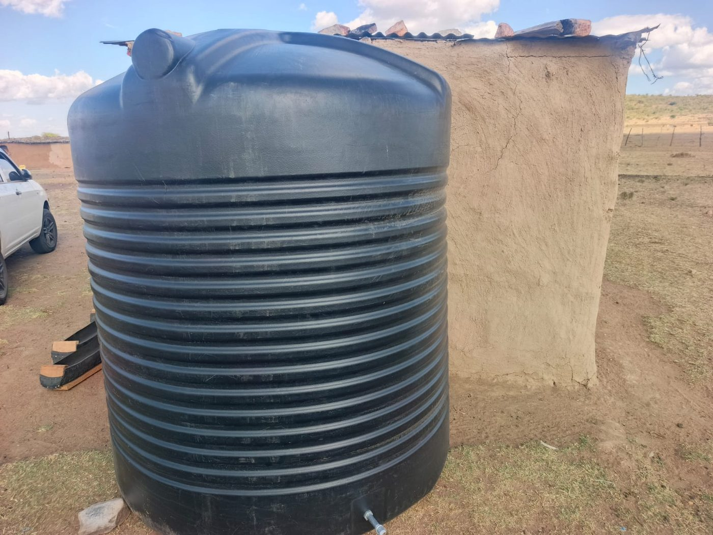
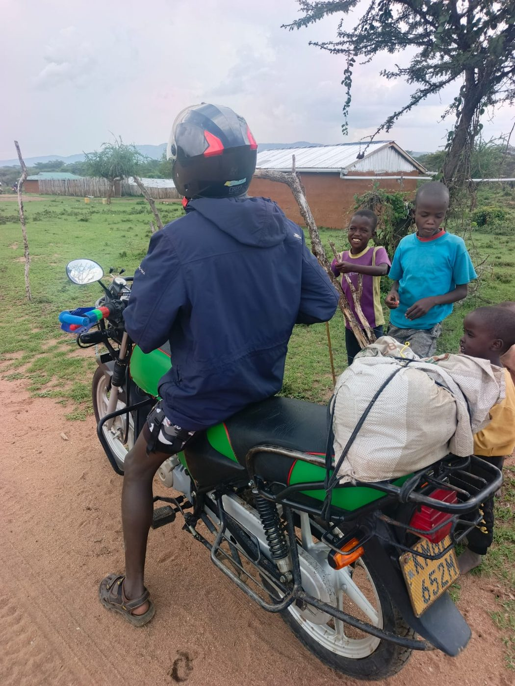

01
Education and holistic development
Enhance access to quality education and holistic development for vulnerable children and youth.
Inua Toto Foundation serves vulnerable children and families in Kenya through education, health, protection, emergency support and community action.
Our work is designed around the conditions children and families need to learn, stay healthy, feel safe and build a future together.
Enhance access to quality education and holistic development for vulnerable children and youth.
Promote the health, nutrition and basic wellbeing of vulnerable children and families.
Protect and promote the rights, safety, dignity and inclusion of children.
Provide timely humanitarian, emergency and social support to children and vulnerable households.
Strengthen partnerships and community based systems for sustainable child and family wellbeing.
From a classroom visit to a last mile delivery, our programs connect immediate care with lasting opportunity.

We guide young people toward school, positive life pathways and mentors who keep showing up.
Clear health information and outreach help families make informed choices where reliable advice is hard to reach.
We support children's homes, hospitals and schools for children with disabilities with dignity and consent.

“A child's future should not depend on chance.”
Inua Toto Foundation exists to touch the lives of young Kenyans through charity, inspiration, health education and the information they need to thrive. Every response begins with humanity, selflessness and the belief that communities already hold much of the answer.
Work alongside usThese moments are the work: showing up, listening carefully and moving support to where it matters.





Tell us what you would like to make possible. We will get back to you through the contact details you provide.